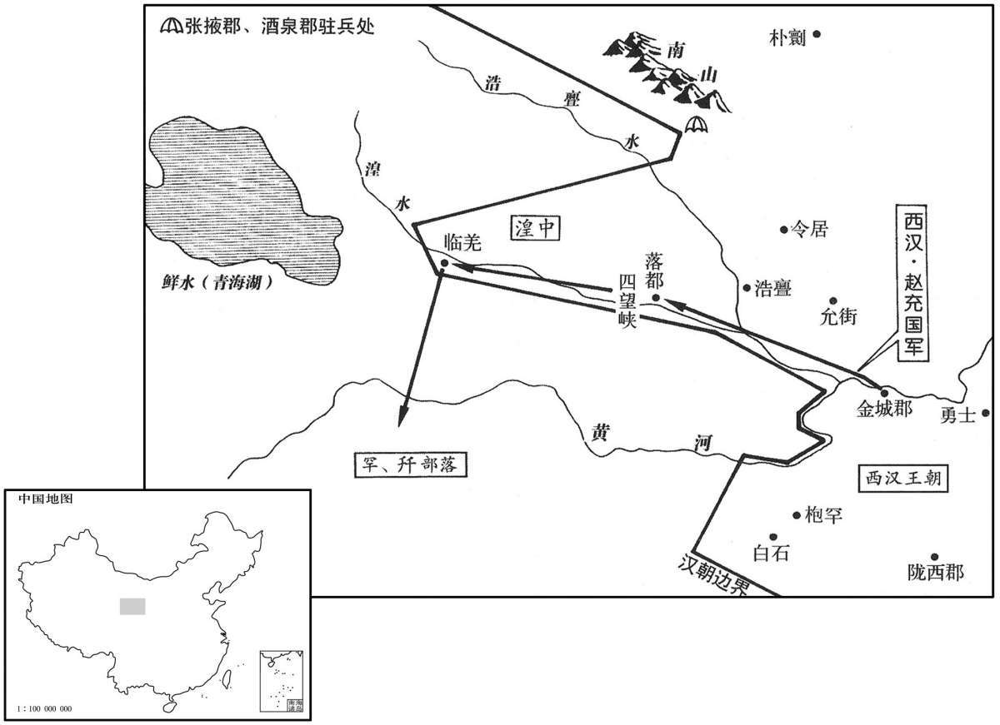

公元前61年资治通鉴：本年记事、原文与白话对照
按原书编年位置阅读；追叙和史论不等于本年发生的事件。白话采用所据译本，缺译不以生成译文补齐。
卷26 · 本年记事
公元前61年 · 汉中宗孝宣皇帝神爵元年
神爵元年〔（庚申、前六一）〕〔以神爵降集纪元。〕
本年事件索引（现代整理）
- 宣帝巡祀甘泉与河东，扩建神祠
- 王褒作《圣主得贤臣颂》，论君臣相得之道
- 张敞劝宣帝远方士、重帝王治术，宣帝罢方士待诏
- 王吉进言整饬礼制、抑制外戚与奢靡，未获采纳
- 义渠安国擅杀羌人首领，激起诸羌反叛
- 赵充国自请领兵平羌，宣帝命其出征
- 东方有彗星出现
- 赵充国谨慎渡河入金城，不为羌骑挑衅所动
- 赵充国坚壁持重并招抚罕、开羌，等待先零疲敝
- 辛武贤主张分兵突袭羌部，赵充国反对冒进
- 宣帝命许延寿、辛武贤出击，催促赵充国配合进兵
- 赵充国力陈先击先零、避免误伤罕羌，宣帝采纳
- 赵充国缓追先零，缴获大量牲畜并招降罕羌
- 赵充国主张罢骑屯田，拒绝仓促进攻
- 赵充国奏陈在金城屯田、修路省费以待羌乱平定
- 宣帝追问屯田何时可定羌，要求赵充国再作估算
- 赵充国列屯田十二利，主张持久待敌自溃
- 宣帝担忧羌人趁汉军减兵袭扰，再次质询赵充国
- 赵充国详论羌势将衰，反对冒险出兵损耗国力
- 朝臣转而支持赵充国，汉军出击后羌众大降，改由其屯田
- 循吏朱邑去世，宣帝赐金供其子奉祭
- 韩增升任大司马、车骑将军
- 丁令屡袭匈奴，匈奴出兵报复无功

本年形势与背景参考图
春，正月，上始行幸甘泉，郊泰畤；三月，行幸河东，祠后土。上颇修武帝故事，谨斋祀之礼，以方士言增置神祠；〔时以方士言，为随侯剑、宝玉、宝璧、周康宝鼎立四祠于未央宫中。又祠大室山于即墨，三户山于下密；祠天封苑火井于鸿门；又立岁星、辰星、太白、荧惑、南斗祠于长安城旁；又祠参山八神于曲城，蓬山石社、石鼓于临朐，之罘山于腄，成山于不夜，莱山于黄；成山祠日，莱山祠月，又祠四时于琅邪，蚩尤于寿良。京师近县，祠鄠则有劳谷、五床山、日、月、五帝、仙人、玉女祠；云阳有径路神祠；又立五龙山仙人祠及黄帝、天神帝、原水凡四祠于肤施。〕闻益州有金马、碧鸡之神，可醮祭而致，〔后汉志：越巂郡青蛉县禺同山，俗谓有金马、碧鸡。如淳曰：金形似马，碧形似鸡。水经注曰：禺同山神有金马、碧鸡，光景儵忽。醮，即召翻。〕于是遣谏大夫蜀郡王褒使持节而求之。〔使，疏吏翻。〕
春季，正月，汉宣帝第一次前往甘泉宫，在泰祭祀天神。三月，前往河东郡，祭祀后土神。汉宣帝颇仿照武帝旧例，小心谨慎地遵守斋戒祭祀之礼，又采纳方士的意见增修神祠。汉宣帝听说益州有金马神和碧鸡神，可以通过祭礼请到，于是派谏大夫蜀郡人王褒携带皇帝符节前去寻找。
初，上闻褒有俊才，召见，〔见，贤遍翻。〕使为圣主得贤臣颂。其辞曰：“夫贤者，国家之器用也。所任贤，则趋舍省而功施普；〔师古曰：趋，读曰趣。普，博也。趋，七喻翻。舍，读曰舍。施，式智翻。〕器用利，则用力少而就效众。故工人之用钝器也，劳筋苦骨，终日矻矻；〔应劭曰：矻矻，劳极貌；如淳曰：健作貌。师古曰：如说是也。矻，口骨翻。〕及至巧冶铸干将，〔干将，吴宝剑名，阖庐所铸。〕使离娄督绳，公输削墨，〔张晏曰：离娄，黄帝时明目者也。应劭曰：公输，鲁般，性巧者也。师古曰：督，察视也。〕虽崇台五层、延袤百丈而不溷者，工用相得也。〔师古曰：溷，乱也，音胡顿翻。〕庸人之御驽马，亦伤吻、敝策而不进于行；〔师古曰：吻，口角也。策，所以击马。〕及至驾啮膝、骖乘旦，〔孟康曰：良马低头，口至膝，故曰啮膝。张晏曰：驾则旦至，故曰乘旦。乘，食证翻。〕王良执靶，〔张晏曰：王良，邮无恤，字伯乐。晋灼曰：靶，音霸；谓辔也。师古曰：参验左氏传及国语、孟子，邮无恤、邮良、刘无止、王良，总一人也。楚辞云：骥踌躇于敝辇，遇孙阳而得代。王逸云：孙阳，伯乐姓名也。列子云：伯乐，秦穆公时人。考其年代，不相当。张说云良字伯乐，斯失之矣。〕韩哀附舆，〔应劭曰：世本：韩哀作御。师古曰：宋衷云：韩哀，韩哀侯也。时已有御，此复言作者，加其精巧也。然则善御者耳，非始作也。〕周流八极，万里一息，何其辽哉？人马相得也。故服絺绤之凉者，不苦盛暑之郁焕；袭貂狐之暖者，不忧至寒之凄怆。〔师古曰：郁，热气也。燠，温也。凄怆，寒冷也。燠，于六翻。暖，乃短翻。〕何则？有其具者易其备。贤人、君子，亦圣王之所以易海内也。〔易，以豉翻。〕昔周公躬吐捉之劳，故有圉空之隆；〔师古曰：一饭三吐食，一沐三捉发，以宾贤士，故能成太平之化，而刑措不用，故囹圄空虚也。圉，音圄，同。〕齐桓设庭燎之礼，故有匡合之功。〔应劭曰：有以九九求见桓公，桓公不内。其人曰：“九九小术，而君不内之，况大于九九者乎！”于是桓公设庭燎之礼而见之。居无几，隰朋自远而至，齐遂以霸。师古曰：九九，计数之书，若今算经也。匡，谓一匡天下。合，谓九合诸侯。〕由此观之，君人者勤于求贤而逸于得人。人臣亦然。昔贤者之未遭遇也，图事揆策，则君不用其谋，陈见悃诚，〔王逸曰：悃愊，志纯一也，亦犹实也。〕则上不然其信；进仕不得施效，斥逐又非其愆。是故伊尹勤于鼎俎，太公困于鼓刀，〔师古曰：勤于鼎俎，谓负鼎俎以干汤也。鼓刀者，谓太公屠牛于朝歌也。〕百里自鬻，宁子饭牛，〔师古曰：鬻，卖也。吕氏春秋曰：百里奚之未遇时也，虞亡而虏缚，鬻以五羊之皮，公孙枝得而悦之，献诸穆公。应劭曰：齐桓公夜出迎客，宁戚疾击其牛角，高歌曰：“南山矸，白石烂，生不逢尧与舜禅！短布单衣适至骭，从昏饭牛薄夜半，长夜曼曼何时旦！”桓公遂召与语，悦之，以为大夫。饭，扶晚翻。〕离此患也。〔师古曰：离，遭也。〕及其遇明君、遭圣主也，运筹合上意，谏诤即见听，进退得关其忠，任职得行其术，剖符锡壤而光祖考。故世必有圣知之君〔知，读曰智。〕而后有贤明之臣。故虎啸而风冽，〔师古曰：冽冽，风也；音列。〕龙兴而致云，蟋蟀竢秋唫，蜉蝤出以阴。〔孟康曰：蜉蝤，渠略也。师古曰：蟋蟀，今之促织也。蜉蝤，甲虫也，好丛众而生也，朝生而夕死。舍人曰：南阳以东曰蜉蝤，梁、宋之间曰渠略。郭璞曰：似蛣蜣，身狭而长，有角，黄黑色，聚生粪土中，朝生暮死，猪好噉之。陆玑疏云：蜉蝣有角，大如指，长三四寸，甲下有翅，能飞，夏月阴雨时地中出。竢，即俟字。蝤，音由。〕易曰：『飞龙在天，利见大人。』〔师古曰：干卦九五爻辞也。言王者居正阳之位，贤才见之，则利用也。〕诗曰：『思皇多士，生此王国。』〔师古曰：大雅文王之诗也。思，语辞也。皇，美也。言美哉众多贤士，生此周王之国也。〕故世平主圣，俊艾将自至；〔师古曰：艾，读曰乂。〕明明在朝，穆穆布列，聚精会神，相得益章，〔师古曰：章，明也。〕虽伯牙操递钟，〔晋灼曰：递，音递送之递。二十四钟各有节奏，击之不常，故曰递。臣瓒曰：楚辞云：“奏伯牙之号钟。”号钟，琴名也。马融笛赋曰：号钟，高调。伯牙以善鼓琴，不闻其能击钟也。师古曰：琴名，是也。字既作递，则与楚辞不同，不得即读为号，当依晋音耳。〕逢门子弯乌号，〔师古曰：逢门，善射者，即逢蒙也。应劭曰：楚有柘桑，乌栖其上，枝下着地，不得飞，欲堕，号呼，故曰乌号。张揖曰：黄帝乘龙上天，小臣不得上，挽持龙髥；髥拔，堕黄帝弓；臣下抱弓而号，故名弓乌号。师古曰：应、张二说皆有据。逢，皮江翻。〕犹未足以喻其意也。故圣主必待贤臣而弘功业，俊士亦俟明主以显其德。上下俱欲，驩然交欣，千载壹合，论说无疑，翼乎如鸿毛遇顺风，沛乎如巨鱼纵大壑；其得意若此，则胡禁不止，曷令不行，〔师古曰：胡、曷，皆何也。〕化溢四表，横被无穷。〔被，皮义翻。〕是以圣主不偏窥望而视已明，不殚倾耳而听已聪，〔师古曰：殚，尽也。〕太平之责塞，〔师古曰：塞，满也。塞，悉则翻。〕优游之望得，休征自至，寿考无疆，何必偃仰屈伸若彭祖，呴嘘呼吸如侨、松，〔如淳曰：五帝纪：彭祖，尧、舜时人。列仙传：彭祖，殷大夫也；历夏至商末，号年七百。师古曰：呴、嘘，皆开口出气也。侨，王侨；松，赤松子；皆仙人也。呴，吁于翻。嘘，音虚。〕眇然绝俗离世哉！”〔师古曰：眇然，高远之意。离，力智翻。〕是时上颇好神仙，故褒对及之。〔好，呼到翻；下同。〕
当初，汉宣帝听说王褒很有才干，召见他，命他作了一篇《圣主得贤臣颂》。文中说到：“贤才，是国家的工具。任用的官吏贤能，办事进退简易，又能普遍获得良好的功效；使用的工具锋利，花费很少的力量就能取得很多的成果。所以，如果工匠使用的工具不够锋利，即使劳筋动骨，终日辛苦；而使用精巧的工具，则能铸造出‘干将’宝剑。假使派眼神好的离娄负责测量，鲁班砍削木材，测量百丈面积，修建五层高台也不会失误，这是因为用人得当。蠢人骑劣马，即使勒破马嘴，抽坏马鞭，也不能前进；而由精于骑术的王良骑乘名种良驹，由善于改进车辆的韩哀侯驾驶快疾的宝马拉着马车周游天下，即使是万里之遥，也不过喘口气的工夫就能到达，为什么这么快呢？因为人马相得益彰之故。所以，身穿凉爽的麻布衣的人，不苦于盛夏的暑热；身穿温暖柔软的貂、狐皮衣的人，不担忧严冬的寒冷。原因何在？因为他们拥有相应的工具而易于防备。贤人、君子，也正是圣明的君王易于治理天下的工具。从前，周公为了接待宾客，吃一顿饭要停顿三次，沐浴一次要束起三次头发，所以才会出现监狱空闲的盛世；齐桓公在庭中燃起火炬，为的是不分昼夜地接待贤士，所以才能九合诸侯，称霸天下。由此看来，作为君王，只有首先不辞辛苦地访求贤才，然后才能享受所得贤才给他带来的安逸。作为人臣也是如此。过去，贤能的人在没有受到君王的赏识之前，贡献策略，君王不用；陈述建议，君王不听；作官不能施展他的能力，遭斥逐也并非有什么过失。所以，伊尹曾经背着饭锅菜板去做厨师，姜太公曾经操刀杀牛，百里奚曾经自卖，宁戚曾经喂牛，都经历过忧患及至遇到圣主明君，出谋划策都符合主上的心意，规劝进谏立即被主上接受，无论进退都能显示其忠心，担任官职也能施展其本领，接受君王赐给的封爵、土地，光宗耀祖。所以，世间必须先有圣明智慧的君王，然后才有贤能的臣子。虎啸而兴风，龙飞而生云，蟋蟀到秋天才鸣叫，甲虫在阴湿崐处才会出现。《易经》上说：‘飞龙在天，有利于选拔贤才。’《诗经》上说：‘济济贤才，生于周国。’所以，世道太平，君主圣明，才俊之士自会来临。君王勉力于上，人臣恭谨于下，聚精会神，相得益彰，即使用伯牙演奏他的‘递钟’名琴，逢蒙使用他的‘乌号’神弓也不足以比喻君臣之间的融洽。所以圣主必须等待贤臣来辅佐，才能光大功业；贤臣只有等待圣主的赏识，才能显示才干。上下互相需要，彼此欣悦，这是千年一次的际遇，言论见解无所猜疑，犹如羽毛遇到顺风，巨鲸纵横大海，如此得意，那么何禁不止，何令不行？圣贤的教化，必将传播四方，永无穷尽。所以，圣主不必处处窥望就已看得明白，不必时时侧耳就已听得清楚，使天下太平的责任已经尽到，安乐悠闲的愿望已经实现，祥瑞自然降临，寿命自然无疆，何必像彭祖那样俯仰屈伸，像王侨、赤松子那样呼吸吐纳，去寻觅与世隔绝的仙境呢！”此时，汉宣帝颇喜好神仙之术，所以王褒在文中特别提及。
京兆尹张敞亦上疏谏曰：“愿明主时忘车马之好，斥远方士之虚语，游心帝王之术，太平庶几可兴也。”〔远，于愿翻。几，居希翻。〕上由是悉罢尚方待诏。〔此尚方，非作器物之尚方。尚，主也，主方药也。司马相如大人赋：诏岐伯使尚方，是也。〕初，赵广汉死后，为京兆尹者皆不称职，〔称，尺证翻。〕唯敞能继其迹；其方略、耳目不及广汉，然颇以经术儒雅文之。
京兆尹张敞也上书规劝汉宣帝说：“希望明主经常忘掉乘车骑马的嗜好，疏远方士的虚言妄语，留心于帝王之术，太平盛世可望出现。”于是汉宣帝将担任待诏的方士全部罢斥。最初，自赵广汉死后，担任京兆尹一职的人都不称职，只有张敞能继续赵广汉的政绩，他的谋略、聪明虽不如赵广汉，但能以儒家经术加以辅助。
上颇修饰，宫室、车服盛于昭帝时；外戚许、史、王氏贵宠。谏大夫王吉上疏曰：“陛下躬圣质，总万方，惟思世务，将兴太平，诏书每下，民欣然若更生。臣伏而思之，可谓至恩，未可谓本务也。〔师古曰：言天子如此，虽于百姓为至恩，然未尽政务之本也。〕欲治之主不世出，〔师古曰：言有时遇之不常值。治，直吏翻。〕公卿幸得遭遇其时，言听谏从，然未有建万世之长策，举明主于三代之隆也。其务在于期会、簿书、断狱、听讼而已，〔断，丁乱翻。〕此非太平之基也。臣闻民者，弱而不可胜，愚而不可欺也。圣主独行于深宫，得则天下称诵之，失则天下咸言之，故宜谨选左右，审择所使。左右所以正身，所使所以宣德，此其本也。孔子曰：『安上治民，莫善于礼，』非空言也。〔师古曰：孝经载孔子之言。治，直之翻。〕王者未制礼之时，引先王礼宜于今者而用之。臣愿陛下承天心，发大业，与公卿大臣延及儒生，述旧礼，明王制，驱一世之民跻之仁寿之域，〔师古曰：以仁抚下，则群生安逸而寿考。余谓此以仁、寿二字并言，仁者不鄙诈，寿者不夭折也。驱，与驱同。〕则俗何以不若成、康，寿何以不若高宗！〔师古曰：高宗，殷王武丁也，享国百年。〕窃见当世趋务不合于道者，谨条奏，〔师古曰：趋，读曰趣。趣，向也。〕唯陛下财择焉。”吉意以为：“世俗聘妻、送女无节，则贫人不及，故不举子。又，汉家列侯尚公主，诸侯则国人承翁主，〔晋灼曰：娶天子女，则曰尚公主。国人娶诸侯女，则曰承翁主。尚、承，皆卑下之名也。〕使男事女，夫屈于妇，逆阴阳之位，故多女乱。古者衣服、车马，贵贱有章；今上下僭差，人人自制，〔师古曰：言无节度。〕是以贪财诛利，不畏死亡。〔诛，责也，求也。〕周之所以能致治刑措而不用者，以其禁邪于冥冥，绝恶于未萌也。”〔师古曰：冥冥，言未有端绪也。治，直吏翻。〕又言：“舜、汤不用三公、九卿之世而举皋陶、伊尹，〔李奇曰：不继世而爵也。言皋陶、伊尹非三公、九卿之世。陶，音遥。〕不仁者远。〔师古曰：任用贤人，放黜谗佞。〕今使俗吏得任子弟，〔张晏曰：子弟以父兄任为郎。〕率多骄骜，不通古今，无益于民，宜明选求贤，除任子之令；外家及故人，可厚以财，不宜居位。去角抵，减乐府，省尚方，明示天下以俭。古者工不造雕瑑，〔师古曰：瑑者，刻镂为文。瑑，音篆。〕商不通侈靡，非工、商之独贤，政教使之然也。”上以其言为迂阔，〔师古曰：迂，远也，音于。〕不甚宠异也。吉遂谢病归。
汉宣帝颇注重修饰，其宫室、车马、服饰都超过汉昭帝之时。外戚许、史、王氏家族尊贵受宠。谏大夫王吉上书汉宣帝说：“陛下以圣明的资质总揽万方事务，专心思虑天下大事，将实现太平盛世。每次颁下诏书，百姓们就如同生命重新开始一样欢欣鼓舞。我想，这种情况可以说是陛下对百姓的最大恩德，却不能说是为政的根本。想使国家大治的圣主并不经常出现，而如今的公卿大臣有幸遇到圣主出现，言听计从，但未能制定出建立万世基业的长远规划，未能辅助圣明君主创立可与夏、商、周三代媲美的太平盛世。当今的政务主要着眼于朝会、财政报告、审判、处理讼案而已，这并非建立太平盛世的基础。我听说，老百姓虽然软弱，却无法战胜他们；虽然愚昧，却不可欺骗他们。圣主独处深宫，所作的决定，恰当则受到天下人的称颂，失当则被天下人纷纷议论，所以应小心地挑选身边的助手，审慎地择用执行命令的官员。使身边的助手能够帮助君王端正自身，执行命令的官员能够宣示圣德，这才是君王的根本要务。孔子说：‘使君王平安、百姓得到治理，没有比推行礼更好的了。’这不是一句空话。作为君王，在尚未制定出新的礼仪之前，应引用古代圣明君王制定的、与当今情况相适应的礼付诸实施。我希望陛下能上承天心，发展崐大业，与公卿大臣以及儒生一起研究古代的礼仪制度，推行圣王的制度，使全体百姓都能达到仁义、福寿的境地。果真如此，风俗怎会不如周成王、周康王之时，寿命怎能不像殷高宗武丁！谨将我看到的当前人们所追求的不合于正道的现象分别列出，奏明陛下，请陛下裁决。”王吉认为：“当今世俗，娶妻、嫁女的费用没有节制，使贫苦的人无力承担，以至于不敢生孩子。再有，列侯娶天子的女儿，称为‘尚公主’，国人娶诸侯王之女，称为‘承翁主’，让男子事奉妇女，丈夫屈从妻子，颠倒了阴阳之位，所以才多次发生女人为乱的情况。古人在衣服、车马方面，严格规定了尊卑贵贱的区别；如今却上下不分，混乱一团，人人各随自己的喜好制作，所以贪图财物，追求利禄，甚至连死都不怕。周朝之所以能不用刑罚而使天下大治，是因为他们都将邪恶禁绝在发生之前。”又说：“舜、汤不用三公、九卿的后代而遴选皋陶、伊尹，不仁之人自然远去。如今却使庸俗官吏的子弟因其父兄的关系得以担任官职，这些人大多骄横傲慢，不通古今，无益百姓。应公开征选贤能人才，废除保荐子弟为官的‘任子令’；陛下的外家和故旧，可以赏赐丰厚的财物，却不宜让他们身居重要官位。除去‘角抵’游戏，减少乐府艺人，节省尚方用度，在天下人面前明确表示提倡节俭。古代的工匠不雕刻细致的装饰，商贾不贩卖奢侈物品，并非古代的工匠和商贾唯独贤明，而是政令教化使他们如此的。”汉宣帝认为王吉的话迂腐可笑，并不重视，于是王吉以有病为借口，辞职回乡。
义渠安国至羌中，召先零诸豪三十余人，以尤桀黠者皆斩之；〔师古曰：桀，坚也，言不顺从也。黠，恶也，为恶坚也。零，音怜。黠，户八翻。〕纵兵击其种人，〔种，章勇翻；下同。〕斩首千余级。于是诸降羌及归义羌侯杨玉等怨怒，无所信乡，〔师古曰：恐中国泛怒，不信其心而纳向之。仲冯曰：恐怒，且恐且怒也。羌未有变，而汉吏无故诛杀其人，故杨玉等谓汉无所信乡，于是与他族皆叛也。余谓恐怒，仲冯说是。无所信向，不信汉、不向汉也。作“怨怒”者，通鉴略改班书之文，成一家言。降，户江翻。〕遂劫略小种，背畔犯塞，攻城邑，杀长吏。〔背，蒲妹翻。〕安国以骑都尉将骑二〔【章：乙十一行本“二”作“三”；孔本同：张校同。】〕千屯备羌；至浩斖，〔浩斖县，属金城郡；有浩斖水，出西塞外，东至允吾，入湟水。孟康曰：浩斖，音合门。师古曰：浩，音诰。浩，水名也。斖者，水流峡山，岸深若门也。诗大雅曰：凫鹥在门，亦其义也。今俗呼此水为阁门河，盖疾言之，浩为阁耳。杜佑曰：浩斖县即今金城郡广武县地。又曰：广武县西南有汉浩斖县故城。〕为虏所击，失亡车重、兵器甚众。〔师古曰：重，音直用翻。〕安国引还，至令居，以闻。〔令，音零。〕
义渠安国到达羌中，召集先零部落众首领三十余人前来，将其中最为桀骜狡猾者全部杀死，又纵兵袭击先零人，斩首一千余级。于是引起归附汉朝的各羌人部落和归义羌侯杨玉的愤怒怨恨，不再信任、顺服汉朝，于是劫掠弱小种族，侵犯汉朝边塞，攻打城池，杀伤官吏。义渠安国以骑都尉身分率领二千骑兵防备羌人，进至浩，遭到羌人袭击，损失了很多车马辎重和武器。义渠安国率兵撤退，到达令居，奏闻朝廷。
时赵充国年七十余，上老之，使丙吉问谁可将者。〔将，即亮翻；下同。〕充国对曰：“无逾于老臣者矣！”上遣问焉，曰：“将军度羌虏何如？〔师古曰：度，计也，音大各翻；下同。〕当用几人？”充国曰：“百闻不如一见。兵难遥度，臣愿驰至金城，〔昭帝元始六年，置金城郡；唐兰、鄯、廓州地。〕图上方略。〔师古曰：图其地形，并为攻讨方略，俱奏上也。上，时掌翻；下兵上同。〕羌戎小夷，逆天背畔，灭亡不久，〔背，蒲妹翻。〕愿陛下以属老臣，〔师古曰：属，委也。属，音之欲翻。〕勿以为忧！”上笑曰：“诺。”乃大发兵诣金城。夏，四月，遣充国将之，以击西羌。〔将，即亮翻。〕
此时，赵充国年纪已七十有余，汉宣帝认为他已老，派丙吉前去问他谁能担任大将。赵充国回答说：“谁也不如我合适。”汉宣帝又派人问他说：“你估计羌人会怎样？应当派多少人？”赵充国说：“百闻不如一见，行兵打仗之事难以遥测，我愿赶到金城，画出地图，制定方略，再上奏陛下。羌人不过是戎夷小种，逆天背叛，不久就会灭亡，希望陛下将此事交给老臣来办，不必担忧。”汉宣帝笑着说：“可以。”于是调发大兵前往金城。夏季，四月，派赵充国率领金城军队进攻西羌。
六月，有星孛于东方。〔孛，蒲内翻。〕
六月，东方天空出现异星。
赵充国至金城，须兵满万骑，欲渡河，恐为虏所遮，即夜遣三校衔枚先渡，〔师古曰：衔枚者，欲其无声，使虏不觉。校，户教翻；下同。〕渡，辄营陈；〔立营陈，则虏不得而犯，诸军可以相继而渡河。陈，读曰阵。〕会明毕，遂以次尽渡。虏数十百骑来，出入军傍，充国曰：“吾士马新倦，不可驰逐，此皆骁骑难制，又恐其为诱兵也。〔骁，坚尧翻。诱，音酉。〕击虏以殄灭为期，小利不足贪！”令军勿击。遣骑候四望陿中无虏，〔文颖曰：金城有三陿，在南六百里。师古曰：山峭而夹水曰陿，四望者，陿名也。陿，音狭。〕夜，引兵上至落都，〔服虔曰。落都，山名也。据水经注，破羌县之西有乐都城。后汉志，浩斖县有雒都谷。刘昫曰：唐鄯州，治故乐都城。〕召诸校司马谓曰：“吾知羌虏不能为兵矣！使虏发数千人守杜四望陿中，〔师古曰：杜，塞也。〕兵岂得入哉！”
赵充国来到金城，等骑兵集结到一万名时，打算渡过黄河，怕遭羌军拦击，便于夜晚派出三名军校悄无声息地先行偷渡，渡河后立即设立营阵，正巧天色已明，于是大军依次全部渡过黄河。羌军约百名骑兵出现在汉军附近，赵充国说：“我军现在兵马劳乏，不能奔驰追击，这都是敌人的精锐骑兵，不易制服，又怕是敌人的诱兵。我们此战的目标是要将敌军全部消灭，不能贪图小利！”下令全军不准出击。赵充国派人到四望峡侦察，发现峡中并无敌兵。崐夜晚，赵充国率军穿过四望峡，抵达落都山，召集各位军校、司马说道：“我知道羌人不懂用兵之法了。假如羌人派兵数千，堵住四望峡，我军怎么进得去呢！”
充国常以远斥候为务，行必为战备，止必坚营壁，尤能持重，爱士卒，先计而后战，遂西至西部都尉府，〔孟康曰：在金城。〕日飨军士，〔师古曰：飨，饮。〕士皆欲为用。虏数挑战，〔数，所角翻。挑，徒了翻。〕充国坚守。捕得生口，言羌豪相数责曰：“语汝无反，〔数，所具翻。语，牛倨翻。〕今天子遣赵将军来，年八九十矣，善为兵；今请欲壹斗而死，可得邪！”〔言充国持重不战，羌欲一斗而死，不可得也。〕初，罕、开豪靡当儿使弟雕库来告都尉曰：“先零欲反。”后数日，果反。雕库种人颇在先零中，都尉即留雕库为质。〔金城西部都尉也。种，章勇翻。质，音致。〕充国以为无罪，乃遣归告种豪：“大兵诛有罪者，明白自别，毋取并灭。〔师古曰：言勿相和同，并取灭亡。别，彼列翻。〕天子告诸羌人：犯法者能相捕斩，除罪，仍以功大小赐钱有差；〔时募能斩大豪有罪者一人，赐钱四十万；中豪十五万；下豪二万；女子及老、弱千钱。〕又以其所捕妻子、财物尽与之。”充国计欲以威信招降罕、开及劫略者，解散虏谋，徼其疲剧，乃击之。〔师古曰：徼，要也，音工尧翻。〕
赵充国经常注意向远处派出侦察兵，行军时一定做好战斗准备，扎营时一定使营垒坚固，他特别老成持重，爱护士卒，必先制定好作战计划，然后再进行战斗。他率军向西来到西部都尉府，每天都用丰富的饮食让将士们饱餐，将士们都愿意为他所用。羌军多次挑战，赵充国坚守不出。汉军从抓到的羌军俘虏口中得知，羌人各部首领多次相互责备说：“告诉你不要造反，如今天子派赵将军率军前来，赵将军已然八九十岁了，善于用兵，现在我们就是想一战而死，办不到吗！”最初，、两部首领靡当派其弟雕库来报告西部都尉说：“先零部企图造反。”几天后，先零部果然造反。雕库同族的人有不少在先零部中，于是都尉将雕库留为人质。赵充国认为雕库无罪，便将其放回，让他转告羌人各部首领说：“大兵前来，只杀有罪之人，请你们自相区别，不要与有罪者一同去死。天子要我告诉各部羌人，犯法者只要能主动捕杀同党，就可免罪，仍按功劳大小赐给数量不同的钱财，并将捕杀之人的妻子儿女和财物全部赐给他。”赵充国打算先以威信招降、及其他被先零部胁迫的羌人部落，瓦解羌人联合叛汉的人计划，等到他们疲惫不堪时，再发动攻击。
时上已发内郡兵屯边者合六万人矣。酒泉太守辛武贤〔姓谱：夏启封支子于莘；莘、辛相近，遂为辛氏。汉初申蒲为赵、魏名将，及徙家陇西，遂为陇西人。余按此叙辛武贤之世，然既以莘为辛，而又以申牵合之，以其声相近也。然周自有太史辛甲。〕奏言：“郡兵皆屯备南山，北边空虚，势不可久。若至秋冬乃进兵，此虏在境外之册。今虏朝夕为寇，土地寒苦，汉马不耐冬，不如以七月上旬赍三十日粮，分兵出张掖、酒泉，合击罕、开在鲜水上者。〔刘昫曰：汉金城郡之金城县，罕羌所处也；后汉置西海郡；晋乞伏干归都于此；唐为兰州五泉县。余据汉书，羌豪献鲜水海地于王莽，置西海郡，即此。山海经云：北鲜之山，鲜水出焉，北流注于徐吾。非此鲜水也。〕虽不能尽诛，但夺其畜产，虏其妻子，复引兵还，冬复击之，〔复，扶又翻。〕大兵仍出，虏必震坏。”〔师古曰：仍，频也。〕天子下其书充国，〔下，遐稼翻；下同。〕令议之。充国以为：“一马自负三十日食，为米二斛四斗，麦八斛，又有衣装、兵器，难以追逐。虏必商军进退，〔师古曰：商，计度也。〕稍引去，逐水草，入山林。随而深入，虏即据前险，守后厄，以绝粮道，必有伤危之忧，为夷狄笑，千载不可复。〔复，报也。载，子亥翻。〕而武贤以为可夺其畜产，虏其妻子，此殆空言，非至计也。〔师古曰：殆，仅也。韵略云：近也。〕先零首为畔逆，他种劫略，〔师古曰：言被劫略而反畔，非其本心。〕故臣愚册，〔册，谋也，筹也。〕欲捐罕、开暗昧之过，隐而勿章，先行先零之诛以震动之，宜悔过反善，因赦其罪，选择良吏知其俗者，拊循和辑。〔师古曰：拊，古抚字。辑，与集同。〕此全师保胜安边之册。”
此时，汉宣帝已征发内地郡国的军队达六万人。酒泉太守辛武贤上奏说：“各郡军队都屯扎在南山，使北部边疆空虚，其势难以长久。如等到秋冬季节再出兵，那是敌人远在边境之外的策略，如今羌人日夜不停地进行侵扰，当地气候寒冷，汉军马匹不能过冬，不如在七月上旬，携带三十日粮，自张掖、酒泉分路出兵，合击鲜水之畔的、两部羌人。虽不能全部剿灭，但可夺其畜产，掳其妻子儿女，然后率兵退还，到冬天再次进攻。大军频繁出击，羌人必定震恐。”汉宣帝将辛武贤的奏章交给赵充国，命他发表意见。赵充国认为：“每匹马要载负一名战士三十日的粮食，即米二斛四斗，麦八斛，再加上行装、武器，难以奔驰追击。敌人必然会估计出我军进退的时间，稍稍撤退，追逐水草，深入山林。我军随之深入，敌人就占据前方险要，扼守后方通路，断绝我军粮道，必使我军有伤亡危险的忧虑，受到夷狄之人的嘲笑，这种耻辱千 年也无法报复。而辛武贤认为可以掳夺羌人的畜产、妻子儿女等，这怕是一派空话，不是最好的计策。先零为叛逆祸首，其他部族只是被其胁迫，所以，我的计划是：舍弃、两部昏昧不明的过失，暂时隐忍不宣，先诛讨先零，以震动羌人，他们将会悔过，反过来向善，再赦免其罪，挑选了解他们风俗的优秀官吏，前往安抚和解。这才是既能保全部队，又能获取胜利、保证边疆安定的策略。”
天子下其书，公卿议者咸以为“先零兵盛而负罕、开之助，〔师古曰：负，恃也。〕不先破罕、开，则先零未可图也。”上乃拜侍中许延寿为强弩将军，即拜酒泉太守武贤为破羌将军，〔师古曰：即，就也。就其郡而拜之。〕赐玺书嘉纳其册。以书敕让充国曰：“今转输并起，百姓烦扰，将军将万余之众，不早及秋共水草之利，争其畜食，〔师古曰：此畜，谓畜产牛羊之属；食，谓谷麦之属也。或曰：畜食，畜之所食，即谓草也。〕欲至冬，虏皆当畜食，〔师古曰：此畜读曰蓄。蓄，聚积也。〕多臧匿山中，依险阻，〔臧，古藏字。〕将军士寒，手足皲瘃，〔师古曰：皲，坼裂也。瘃，寒创也。皲，音军。瘃，竹足翻。〕宁有利哉！将军不念中国之费，欲以岁数而胜敌，〔师古曰：久历年岁，乃胜小敌也。数，音所具翻。〕将军谁不乐此者！〔师曰古：言为将军者皆乐此。乐，音洛。〕今诏破羌将军武贤等将兵，以七月击罕羌；将军其引兵并进，勿复有疑！”〔复，扶又翻。〕
汉宣帝将赵充国的奏章交给公卿大臣们讨论，大家都认为：“先零兵力强盛，又依仗、的帮助，如不先破、，就不能进攻先零。”于是汉宣帝任命侍中许延寿为强弩将军，就地任命酒泉太守辛武贤为破羌将军，颁赐诏书嘉勉辛武贤的建议，并写信责备赵弃国说：“如今到处都在向前方输送军粮，使百姓受到烦扰，将军率领大军一万余人，不及早利用秋季水草茂盛的时机，争夺羌人的牲畜、粮食，却要等到冬季再行出击，但那时羌人都会积蓄粮食，多数藏匿于深山之中，据守险要，而将军士卒寒苦，手足皲裂，难道会有利吗！将军不念国家耗费巨大，只想拖延数年而取胜，哪位将军，不愿这样！现在诏令破羌将军辛武贤等率兵于七月进击、，将军率兵同时出击，不得再有迟疑！”
充国上书曰：“陛下前幸赐书，欲使人谕罕，以大军当至，汉不诛罕，以解其谋。臣故遣开豪雕库宣天子至德；罕、开之属皆闻知明诏。今先零羌杨玉阻石山木，候便为寇，〔师古曰：谓阻依山之木石以自保固。〕罕羌未有所犯，乃置先零，先击罕，释有罪，诛无辜，〔师古曰：释，置也，放也。〕起壹难，就两害，诚非陛下本计也！臣闻兵法：『攻不足者守有余。』又曰：『善战者致人，不致于人。』〔师古曰：致人者，引致而取之。致于人，为人所引也。〕今罕羌欲为敦煌、酒泉寇，〔敦，徒门翻。〕宜饬兵马，练战士，以须其至。〔师古曰：须，待也。〕坐得致敌之术，以逸击劳，取胜之道也。今恐二郡兵少，不足以守，而发之行攻，释致虏之术而从为虏所致之道，〔师古曰：释，废也。〕臣愚以为不便。先零羌虏欲为背畔，故与罕、开解仇结约，然其私心不能无恐汉兵至而罕、开背之也。〔背，蒲妹翻。〕臣愚以为其计常欲先赴罕、开之急以坚其约。先击罕羌，先零必助之。今虏马肥、粮食方饶，击之恐不能伤害，适使先零得施德于罕羌，〔师古曰：施德，自树恩德也。〕坚其约，合其党。虏交坚党，合精兵二万余人，迫胁诸小种，附着者稍众，〔着，直略翻。〕莫须之属不轻得离也。〔服虔曰：莫须，小种羌名也。〕如是，虏兵寖多，诛之用力数倍。臣恐国家忧累，〔累，力瑞翻；下累重同。〕由十年数，不二三岁而已。于臣之计，先诛先零已，则罕、开之属之不烦兵而服矣。先零已诛而罕、开不服，涉正月击之，得计之理，又其时也。以今进兵，诚不见其利！”戊申，充国上奏。〔上，时掌翻。〕秋，七月，甲寅，玺书报，从充国计焉。
赵充国上书汉宣帝说：“陛下上次赐我书信，打算派人劝谕部羌人，大军将会前来，但汉朝并不是要征讨他们，以此来瓦解羌人联合叛汉的计划。所以我派部首领雕库去宣示天子盛德，、两部羌人都已听到了天子的明诏。如今先零羌首领杨玉凭借山中树木岩石自保，并寻机出山骚扰，而羌并无冒犯行为，却放过有罪的先零，先打无辜的羌，一个部族起来叛乱，却给两个部族留下伤害，实在违背陛下原来的计划！我听说兵法上讲：‘不足以进攻的力量，用于防守却能有余。’又说：‘善于打仗的人，能主动引诱敌人，而不被敌人所引诱。’如今羌企图进犯敦煌、酒泉，本应整顿兵马，训练士卒，等待敌人前来，坐在那里，用引诱敌人的战术，以逸击劳，这才是取胜之道。现在唯恐二郡兵力单薄，不足防守，却出兵进攻，放弃引诱敌人的战术，而被敌人所引诱，我认为不利。先零羌打算背叛我朝，所以才与、化解怨仇，缔结盟约，但其内心深处不能不害怕汉军一到而、背叛他们。我认为先零时常希望能先为、解救危急，以巩固他们的联盟。先攻羌，先零肯定会援助他们。现在，羌人的马匹正肥，粮食正多，攻击他们，恐怕不能造成伤害，而正好使先零有机会施德于羌，巩固其联盟，团结其党羽。先零巩固其联盟之后，会合精兵二万余人，胁迫其他弱小部族，归附者逐渐增多，像莫须部羌人之类的弱小部族，要想脱离其控制就不容易了。果真如此，则羌人兵力逐渐增多，要征讨他们，就需增加几倍的力量，我恐怕国家的忧烦困扰，当以十年计，而不只二三年了。按我的计划，先诛杀了先零，则、之流不必再劳烦军队，就可顺服。如先零已经诛杀，而、等仍不肯屈服，等到明年正月再攻击他们，则不但合理，而且适时。现在进兵，实在看不到有什么利益！”戊申（二十八日），赵充国奏闻朝廷。秋季，七月甲寅（初五），汉宣帝颁赐诏书，采纳赵充国的计划。
充国乃引兵至先零在所。虏久屯聚，懈弛，〔师古曰：弛，放也。〕望见大军，弃车重，欲渡湟水，〔重，直用翻。〕道厄狭；充国徐行驱之。或曰：“逐利行迟。”〔师古曰：逐利宜速，今行太迟。〕充国曰：“此穷寇，不可迫也。缓之则走不顾，急之则还致死。”〔师古曰：谓更回还尽力而死战。〕诸校皆曰：“善。”虏赴水溺死者数百，降及斩首五百余人。〔降，户江翻。〕虏马、牛、羊十万余头，车四千余两。〔两，音亮。〕兵至地，令军毋燔聚落、刍牧田中。〔师古曰：不得燔烧人居，及于田亩之中刈刍放牧也。〕罕羌闻之，喜曰：“汉果不击我矣！”豪靡忘使人来言：“愿得还复故地。”〔服虔曰：靡忘，羌帅名也。〕充国以闻，未报。靡忘来自归，充国赐饮食，遣还谕种人。护军以下皆争之曰：“此反虏，不可擅遣！”充国曰：“诸君但欲便文自营，〔师古曰：苟取文墨之便，以自营卫。〕非为公家忠计也！”语未卒，〔为，于伪翻。卒，子恤翻。〕玺书报，令靡忘以赎论。后罕竟不烦兵而下。
于是赵充国率兵进抵先零地区。羌人屯兵已久，戒备松懈，忽见汉军大兵来到，慌忙抛弃车马辎重，企图渡过湟水，道路狭窄，赵充国率军缓缓前行，驱赶羌军。有人对赵充国说：“要取得战果，推进速度不宜迟缓。”赵充国说：“这是走投无路的敌兵，不可逼迫太急。缓慢追击，他们只逃跑不回头；逼迫太急，则回头死战。”各位军校都说：“有理。”羌人掉入水中淹死数百人，投降及被汉军所杀达五百余人，汉军缴获马、牛、羊十万余头，车四千余辆。汉军行至地，赵充国下令不得焚烧羌人村落，不得在羌人耕地中牧马。羌听说后，高兴地说：“汉军果然不打我们！”其首领靡忘派人前来对赵充国说：“希望能让我们回到原来的地方。”赵充国上奏朝廷，未得到回音。靡忘亲自前来归降，赵充国赐其饮食，派他回去告谕本部羌人。护军及以下将领都说：“靡忘是国家叛逆，不能擅自放走！”赵充国说：“你们都只是为了文墨之便，自我营护，并不忠心为国家着想！”话未讲完，诏书来到，命靡忘将功赎罪。后羌终于未用兵而平定。
上诏破羌、强弩将军诣屯所，以十二月与充国合，进击先零。时羌降者万余人矣，充国度其必坏，〔度，徒洛翻。〕欲罢骑兵；屯田以待其敝。作奏未上，〔上，时掌翻。〕会得进兵玺书，充国子中郎将昂惧，使客谏充国曰：“诚令兵出，破军杀将，以倾国家，〔将，即亮翻。〕将军守之可也。即利与病，又何足争！一旦不合上意，遣绣衣来责将军，〔师古曰：绣衣，谓御史。〕将军之身不能自保，何国家之安！”充国叹曰：“是何言之不忠也！本用吾言，羌虏得至是邪！〔师古曰：言豫防之，可无今日之寇也。〕往者举可先行羌者，〔行，下孟翻。〕吾举辛武贤；丞相御史复白遣义渠安国，竟沮败羌。〔复，扶又翻。败，补迈翻。〕金城、湟中谷斛八钱，吾谓耿中丞：〔服虔曰：耿寿昌也，为司农中丞。姓谱：耿，古国名，为晋所灭，子孙以为氏。谓，告语也。〕『籴三百万斛谷，羌人不敢动矣！』〔师古曰：言豫储粮食可以制敌。〕耿中丞请籴百万斛，乃得四十万斛耳；义渠再使，〔使，疏吏翻。〕且费其半。失此二册，羌人致敢为逆。失之豪厘，差以千里，是既然矣。今兵久不决，四夷卒有动摇，〔卒，读曰猝；下可卒同，又卒死同。〕相因而起，虽有知者不能善其后，〔知，读曰智。〕羌独足忧邪！〔师古曰：言傥如此，则所忧不独在羌。〕吾固以死守之，明主可为忠言。”
汉宣帝下诏书命破羌将军辛武贤、强弩将军许延寿率兵前往赵充国屯兵之处，于十二月与赵充国会合，进攻先零。当时，羌人投降汉军已一万有余了，赵充国估计羌人肯定要失败，打算撤除骑兵，以步兵在当地屯垦戍卫，等待羌人因自身疲惫而败亡。奏章写好，还未上奏，恰于此时接到汉宣帝命其进兵的诏书。赵充国的儿子中郎将赵感到害怕，便让幕僚去劝赵充国说：“假如出兵会损兵折将，倾覆国家，将军坚持己见，防守不出也还可以。而如果只是利与弊的区别，又有什么可争执的呢？一旦违背了皇上之意，派御史前来责问，将军本身不能自保，又怎能保证国家的安全！”赵充国叹息说：“这话是多么不忠！若是原来就采纳我的意见，羌人能发展到这一步吗！当初，推荐先去西羌巡行的人选，我推荐了辛武贤；而丞相、御史又奏请皇上，派义渠安国前去，结果败坏了大事。金城、湟中地区谷价一斛八钱，我曾对司农中丞耿寿昌说：‘只要我们购买三百万斛谷物储备，羌人就不敢轻举妄动了。’而耿寿昌请求购买一百万斛，实际只得四十万斛而已，义渠安国再次出行，又用去一半。这两项计划都未实现，才使羌人敢于叛逆。正所谓失之毫厘，差以千里！如今战事长期不能结束，如果四方蛮夷突然动摇，借机相继起兵造反，即使高明的人也无法收拾，岂只是羌人值得忧虑！我誓死也要坚持我的意见，皇上圣明，可以向他陈述我的忠言。”
遂上屯田奏曰：“臣所将吏士、马牛食所用粮谷、茭槁，调度甚广，难久不解，〔调，徒吊翻。难，乃旦翻。〕傜役不息，恐生他变，为明主忧，诚非素定庙胜之册。〔师古曰：庙胜，谓谋于庙堂而胜敌也。〕且羌易以计破，难用兵碎也，〔易，以豉翻。〕故臣愚心以为击之不便！计度临羌东至浩斖，羌虏故田及公田，民所未垦，可二千顷以上，〔度，徒洛翻。〕其间邮亭多坏败者。臣前部士入山，伐林木六万余枚，在水次。臣愿罢骑兵，留步兵万二百八十一人，分屯要害处，冰解漕下，缮乡亭，浚沟渠，〔师古曰：漕下，以水运木而下也。缮，补也。浚，深治也。〕治湟狭以西道桥七十所，令可至鲜水左右。田事出，赋人三〔【章：甲十五行本“三”作“二”；乙十一行本同；孔本同；张校同。】〕十畮；〔师古曰：田事出，谓至春，人出营田也。赋，谓班与之也。畮，古亩字。〕至四月草生，发郡骑及属国胡骑各千，就草为田者游兵，以充入金城郡，益积畜，省大费。今大司农所转谷至者，足支万人一岁食，谨上田处及器用簿。”〔上，时掌翻。〕
于是，赵充国上书请求屯田说：“我率领的将士、马牛食用的粮食、草料须大范围地从各处征调，羌乱长久不能解除，则徭役不会止息，又恐发生其他变故，为陛下增加忧虑，确实不是朝廷克敌制胜的上策。况且，对羌人之叛，用智谋瓦解较易，用武力镇压则较难，所以我认为进攻不是上策！据估计，从临羌向东至浩，羌人旧有的私田和公田，民众没有开垦的荒地，约有二千顷以上，其间驿站多数颓坏。我以前曾派士卒入山，砍伐林木六万余株，存于湟水之滨。我建议：撤除骑兵，留步兵一万二百八十一人，分别屯驻在要害地区，待到河水解冻，木材顺流而下，正好用来修缮乡亭，疏浚沟渠，在湟以西建造桥梁七十座，使至鲜水一带的道路畅通。明年春耕时，每名屯田兵卒分给三十亩土地；到四月草木长出后，征调郡属骑兵和属国胡人骑兵各一千，到草地为屯田者充当警卫。屯田收获的粮食，运入金城郡，增加积蓄，节省大量费用。现在大司农运来的粮食，足够一万人一年所食，谨呈上屯田区划及需用器具清册。”
上报曰：“即如将军之计，虏当何时伏诛？兵当何时得决？孰计其便，复奏！”〔孰，与熟同。复，扶又翻。〕
汉宣帝下诏询问赵充国说：“如按照将军的计划，羌人叛乱当何时可以剿灭？战事当何时能够结束？仔细研究出最佳方案，再次上奏！”
充国上状曰：“臣闻帝王之兵，以全取胜，是以贵谋而贱战。『百战而百胜，非善之善者也，故先为不可胜以待敌之可胜。』〔师古曰：此兵法之辞，言先自完坚，令敌不能胜我，乃可以胜敌也。余据此言本之孙子。〕蛮夷习俗虽殊于礼义之国，然其欲避害就利，爱亲戚，畏死亡，一也。今虏亡其美地荐草，〔师古曰：荐，稠草。〕愁于寄托，远遯，骨肉心离，人有畔志。而明主班师罢兵，〔邓展曰：班，还也。〕万人留田，顺天时，因地利，以待可胜之虏，虽未即伏辜，兵决可期月而望。羌虏瓦解，前后降者万七百余人，及受言去者凡七十辈，〔如淳曰：羌胡言欲降，受其言遣去者。师古曰：如说非也。谓羌受充国之言，归相告喻者也。羌虏，即羌贼耳，无预于胡。〕此坐支解羌虏之具也。臣谨条不出兵留田便宜十二事：步兵九校、〔师古曰：一部为一校。校，户教翻。〕吏士万人留屯，以为武备，因田致谷，威德并行，一也。又因排折羌虏，令不得归肥饶之地，贫破其众，以成羌虏相畔之渐，二也。居民得并田作，〔师古曰：并且，读如本字，又音步浪翻。仲冯曰：并，亦俱也。〕不失农业，三也。军马一月之食，度支田士一岁，罢骑兵以省大费，四也。〔度，徒洛翻。〕至春，省甲士卒，循河、湟漕谷至临羌，〔临羌县，属金城郡，其西北即塞外。〕以示羌虏，扬威武，传世折冲之具，五也。以闲暇时，下先所伐材，缮治邮亭，充入金城，六也。〔闲，与闲同。治，直之翻。〕兵出，乘危徼幸；〔师古曰：言不可必胜。徼，坚尧翻，又一遥翻。〕不出，令反畔之虏窜于风寒之地，离霜露、疾疫、瘃堕之患，〔师古曰：堕，谓困寒瘃而堕指者。〕坐得必胜之道，七也。无经阻、远追、死伤之害，八也。内不损威武之重，外不令虏得乘间之势，九也。〔师古曰：间，谓军之间隙者也。间，古苋翻。〕又亡惊动河南大开〔服虔曰：皆羌种，在河西之河南也。亡，古无字通。〕使生他变之忧，十也。治隍狭中道桥，令可至鲜水以制西域，伸威千里，从枕席上过师，十一也。〔郑氏曰：桥成，军行安易，若于枕席上过也。〕大费既省，繇役豫息，以戒不虞，十二也。〔繇，古傜字通。〕留屯田得十二便，出兵失十二利，唯明诏采择！”
赵充国上奏说：“我听说，帝王的军队，应当不受什么损失就能取得胜利，所以重视谋略，轻视拚杀。《孙子兵法》说：‘百战百胜，并非高手中的高手，所以应先使自己立于不败之地，再等待可以战胜敌人的机会。’蛮夷外族的习俗虽与我们礼义之邦有所不同，但希望能躲避危害，争取有利，爱护亲属，惧怕死亡，则与我们一样。现在，羌人丧失了他们肥美的土地和茂盛的牧草，逃到遥远的荒山野地，为自己的寄身之地而发愁，骨肉离心，人人都产生了背叛之念。而此时陛下班师罢兵，留下万人屯田，顺应天时，利用地利，等待战胜羌人的机会。羌人虽未立即剿灭，然可望于一年之内结束战事。羌人已在迅速瓦解之中，前后共有一万七百余人投降，接受我方劝告，回去说服自己的同伴不再与朝廷为敌的共有七十批，这些人恰是瓦解羌人的工具。我谨归纳了不出兵而留兵屯田的十二项有益之处：九位步兵指挥官和万名官兵留此屯田，进行战备，耕田积粮，威德并行，此其一。因屯田而排斥羌人，不让他们回到肥沃的土地上去，使其部众贫困破败，以促成羌人相互背叛的趋势，此其二。居民得以一同耕作，不破坏农业，此其三。骑兵，包括战马一个月的食用，能够屯田士兵维持一年，撤除骑兵可节省大量费用，此其四。春天来临，调集士卒，顺黄河和湟水将粮食运到临羌，向羌人显示威力，这是后世御敌的资本，此其五。农闲时，将以前砍伐的木材运来，修缮驿站，将物资输入金城，此其六。如果现在出兵，冒险而无必胜把握；暂不出兵，则使叛逆羌人流窜于风寒之地，遭受霜露、瘟疫、冻伤的灾患，我们则坐着得到必胜的机会，此其七。可以避免遭遇险阻、深入追击和将士死伤的损害，此其八。对内不使朝廷的崐威严受到损害，对外不给羌人以可乘之机，此其九。又不会惊动黄河南岸大部落而产生新的事变，增加陛下之忧，此其十。修建隍中的桥梁，使至鲜水的道路畅通，以控制西域，扬威千里之外，使军队从此经过如同经过自家的床头一般容易，此其十一。大费用既已节省，便可不征发徭役，以防止出现预想不到的变故，此其十二。留兵屯田可得此十二项便利，出兵攻击则失此十二项便利，请陛下英明抉择！”
上复赐报曰：“兵决可期月而望者，〔复，扶又翻；下同。期，读曰朞。〕谓今冬邪，谓何时也？将军独不计虏闻兵颇罢，且丁壮相聚，攻扰田者及道上屯兵，复杀略人民，将何以止之？将军孰计复奏！”
汉宣帝再次回复说：“你说可望于一年之中结束战事，是说今年冬季吗？还是何时？难道你不考虑羌人听说我们撤除骑兵，会集结精锐，攻袭骚扰屯田兵卒和道路上的守军，再次杀掠百姓，我们将用什么来制止？将军深入思考后再次上奏。”
充国复奏曰：“臣闻兵以计为本，故多算胜少算。〔孙子曰：多算胜，少算不胜。〕先零羌精兵，今余不过七八千人，失地远客分散，饥冻畔还者不绝。臣愚以为虏破坏可日月冀，远在来春，故曰兵决可期月而望。窃见北边自敦煌至辽东万一千五百余里，乘塞列地有吏卒数千人，虏数以大众攻之而不能害。〔敦，徒门翻。数，所角翻。〕今骑兵虽罢，虏见屯田之士精兵万人，从今尽三月，虏马羸瘦，〔羸，伦为翻。〕必不敢捐其妻子于他种中，〔种，章勇翻。〕远涉河山而来为寇；亦不敢将其累重，还归故地。〔师古曰：累重，谓妻子也。累，力瑞翻。重，直用翻。〕是臣之愚计所以度虏且必瓦解其处，〔师古曰：各于其处自瓦解。度，徒洛翻。〕不战而自破之册也。〔册，与策同。〕至于虏小寇盗，时杀人民，其原未可卒禁。〔卒，读曰猝。〕臣闻战不必胜，不苟接刃；攻不必取，不苟劳众。诚令兵出，虽不能灭先零，但能令虏绝不为小寇，则出兵可也。即今同是，〔师古曰：言俱不能止小寇盗。〕而释坐胜之道，从乘危之势，往终不见利，空内自罢敝，〔罢，读曰疲。〕贬重之自损，〔贬重，谓贬中国之威重也。〕非所以示蛮夷也。又大兵一出，还不可复留，〔言大兵出塞而还，人有归志，不可使复留屯以备羌。〕湟中亦未可空，如是，徭役复更发也。〔复，扶又翻；下同。〕臣愚以为不便。臣窃自惟念：奉诏出塞，引军远击，穷天子之精兵，散车甲于山野，虽亡尺寸之功，〔亡，古无字通；下同。〕偷得避嫌之便，〔师古曰：偷，苟且也。〕而亡后咎余责，此人臣不忠之利，非明主社稷之福也！”
赵充国再次上奏说：“我听说，军事行动以谋略为根本，所以多算胜于少算。先零羌之精兵，如今剩下不过七八千人，丧失了原有的土地，分散于远离家乡的地区，挨饿受冻，不断有人叛逃回家。我认为他们崩溃败亡的时间可望以日月计算，最远在明年春天，所以说可望于一年中结束战事。我看到，北部边疆自敦煌直到辽东，共一万一千五百多里，守卫边塞的官吏和戍卒有数千人，敌人多次以大兵攻击，都不能取胜。现在即使撤除骑兵，而羌人见有屯田戍卫的精兵万人，且从现在开始，到三月底，羌人马匹瘦弱，必不敢将妻子儿女丢在其他部族，远涉山河前来侵扰；也不敢将其家属送还家乡。这正是我预计他们必将就地瓦解，不战自破而制定的策略。至于羌人小规模的侵扰掳掠，偶尔杀伤百姓，原本就无法立刻禁绝。我听说，打仗如无必胜的把握，就不能轻易与敌人交手；进攻如无必取的把握，就不能轻易劳师动众。如果发兵出击，即使不能灭亡先零，但能禁绝羌人小规模的侵扰活动，则可以出兵。如果今天同样不能禁绝，却放弃坐而取胜的机会，采取危险的行动，到底得不到好处，还白白使自己内部疲惫、破败，贬低国家威严而损害自己，不能这样对付蛮夷外族。再者大兵一出，返回时便不可再留，而湟中又不能无人戍守，如果这样，则徭役又将兴起，我认为实无益处。我自己思量，如果尊奉陛下的诏令出塞，率兵远袭羌人，用尽天子的精兵，将车马、甲胄散落在山野之中，即使立不下尺寸之功，也能苟且避免嫌疑，过后还能不负责任，不受指责。然而，这些个人的好处却是对陛下的不忠，不是明主和国家之福！”
充国奏每上，辄下公卿议臣。〔上，时掌翻。下，遐稼翻。〕初是充国计者什三；中什五；最后什八。有诏诘前言不便者，皆顿首服。〔诘，去吉翻。〕魏相曰：“臣愚不习兵事利害。后将军数画军册，〔数，所角翻；下同。〕其言常是，臣任其计必可用也。”〔师古曰：任，保也。〕上于是报充国，嘉纳之；亦以破羌、强弩将军数言当击，以是两从其计，诏两将军与中郎将昂出击。强弩出，降四千余人；破羌斩首二千级；中郎将昂斩首降者亦二千余级；而充国所降复得五千余人。诏罢兵，独充国留屯田。
赵充国每次上奏，汉宣帝都给公卿大臣讨论研究。开始，认为赵充国意见正确的人为十分之三，后增加到十分之五，最后更增至十分之八。汉宣帝诘问开始不同意赵充国意见的人为什么改变观点，这些人都叩首承认自己原来的意见不对。丞相魏相说：“我对军事上的利害关系不了解，后将军赵充国曾多次崐筹划军事方略，他的意见通常都很正确，我担保他的计划一定行得通。”于是汉宣帝回复赵充国，嘉勉并采纳了赵充国的计划，又因破羌将军辛武贤、强弩将军许延寿多次建议进兵攻击，所以也同时批准，下诏命两将军与中郎将赵率部出击。许延寿出击羌人，招降四千余人；辛武贤斩首二千级；赵斩首及招降也有二千余人；而赵充国又招降了五千余人。汉宣帝下诏罢兵，只留下赵充国在当地负责屯田事务。
大司农朱邑卒。上以其循吏，闵惜之，诏赐其子黄金百斤，以奉其祭祀。
大司农朱邑去世。汉宣帝因他是个奉职守法的官吏，感到怜惜，下诏赐其子黄金一百斤，作为祭祀之用。
是岁，〔【张：“岁”下脱“以”字。】〕前将军、龙雒侯韩增为大司马、车骑将军。〔龙雒侯国，属平原郡。师古曰：今书本“雒”字或作“额”，而崔浩云有龙雒村，作“额”者非。雒，音洛。〕
这一年，汉宣帝任命前将军、龙侯韩增为大司马、车骑将军。
丁令比三岁钞盗匈奴，〔令，音零。比，毗至翻。钞，楚交翻。〕杀略数千人。匈奴遣万余骑往击之，无所得。〔史言匈奴渐衰。〕
丁令国连续三年出兵劫掠匈奴，杀死及掳掠数千人。匈奴派遣骑兵一万余人前去攻击丁令国，但没有收获。